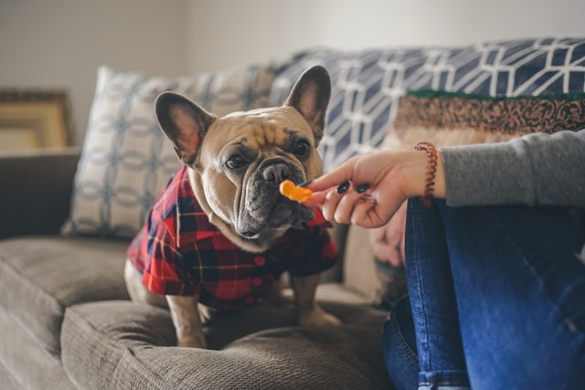

Tips and Hints:
- When trimming a dog's nails or during training exercises, have a handful of treats ready to give as a reward.
- End training sessions on a positive note.
- A healthy, low-calorie alternative to traditional dog treats are different types of veggies, like carrots.
-
Placing a training bell on the door is a good way to train puppies to tell you it's time to go out to potty.
7 Basic Commands Every Dog Should Know
- Sit.
-
Down.
- Stay.
- Come.
- Leave it.
- Heel or Walking with Control.